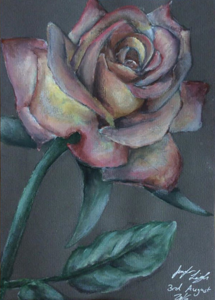
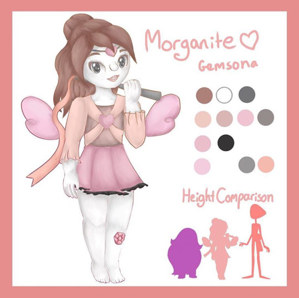
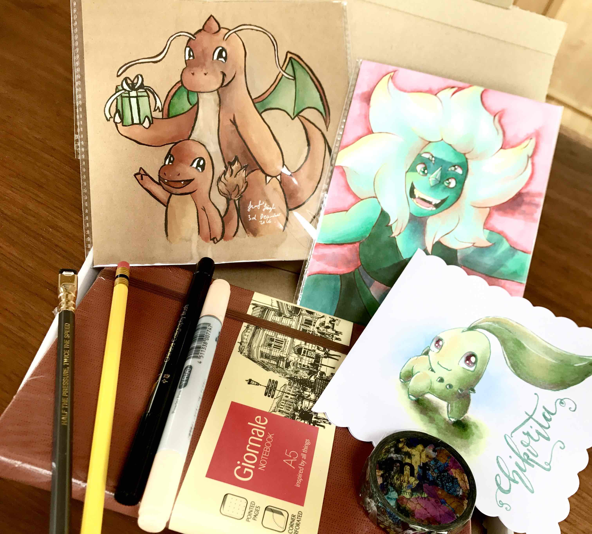

Art trades are such a great opportunity to get to know other artists in the online community. It can be a bit scary to ask someone you look up to if you can exchange art requests, but you have the opportunity to get gorgeous art while also getting past that first communication barrier. This is not the only reason to do an art trade, however; many pen pals actually exchange art packages on a regular basis, and others may trade pre-drawn art at various conventions. There are even spins on this concept, with artist “Secret Santa” events having emerged in recent years! This article is aimed at all the newbies in the art community, or otherwise, who want to make some friends and trade some art!
I’ve been sharing my art online for over four years now, and within my first few months, I started trading digital art requests with other artists in the community. I think this was the point where I started making some new friends, as well as getting my name out there a bit more in the community. I feel like I have done countless art trades, with a wide array of people, of all different types: some sketch trades, some digital full body trades and some mail packages, to a couple of my (now) closest friends. Although I certainly do less art trades now, due to a huge lack of time, I still firmly believe that this is a great way to get your art out there!
What is an art trade?
Often art trades involve two artists drawing each other (or each other’s original characters). This is the type of art trade I will be focusing on in this article, however, other types of art trade can include sending snail mail packages of one’s art to another, full of small surprises. Art trades can be done with realistic requests or with characters and don’t have to just be exchanging a drawing for a drawing; some may exchange other forms of creative media, or may use a more “commission-style” trade, where one person trades art in exchange for a certain-priced item, like costumes, art supplies or similar. At it’s most basic and common level, however, two people will exchange some form of art, where equal effort has been put in.
I have divided the process of art trades into the negotiations before the art trade, during the art creating process, and after you have finished your side of the trade, while the other person has not necessarily finished their half. I hope this covers all the essentials and that those new to the art community can have successful art trades.
Before the trade
Before contacting anyone, it is worth first checking the artist’s bio and recent posts to see if they specify whether or not they accept art trades; many more experienced artists (and a number of beginner artists) often state whether they do or don’t, as it is often a commonly received question. If they state they will not accept art trades, or only accept those with “mutuals” or “friends only”, do not press them further. Some artists can have a lot of pet peeves with the online community, and this is definitely one of them.
If you are interested in getting fully involved with art trades, make sure you have the time to commit to one; it can be a lot of effort, especially if you both go for fully-shaded, full-body artworks. If your art does not take too long, obviously it is not as big a problem, yet for someone like me, who can take around five hours to complete a small request, I find I can only take a couple art trades during my school holidays.
Make sure you communicate what exactly each of you will be drawing, as well as to how big (even if you draw digitally, the size of the canvas) and how finished your piece will be. Will it be a sketch, coloured with flat shading, or a full-on painting? Is it going to be drawn digitally or traditionally? It is really important neither party is disappointed with the end products, so communication is very important throughout the process!
Following on from this, it is important to discuss how the art will be given to the artist. If you are both new artists to the community and trading art for the experience, this is not so important; it is easy enough to just post each others art on the relevant social media platform and call it a day. However, if you are both experienced artists or would like a full copy of the finished piece, you may discuss sharing emails or addresses with each other to exchange full-scale files of the digital art, or for the original pieces of traditional art. If you choose to do either of these, make sure to ask your parents’ permission first if you are under 18, and it is also beneficial to already have known the artist for some time. Some of the artists I have recently done mail trades with have been my close friends for over three years now, so it is important that both you and your parents are okay with the idea. Remember, there are always ways to get around this: for digital art, I have a separate email specifically for business and communication with people online, however there are art platforms, such as DeviantART, that also allow you to post full-scale PNGs and JPEGs; for traditional art, you can always scan and upload a good quality JPEG, but for those who choose to do multiple art trades, there are PO Boxes available. I have also heard of some parents asking for the artwork to go to their workplace, instead of the child’s home!
Lastly, discuss a deadline for the artworks–many artists don’t specify dates, yet it is good to ask the other artist something along the lines of “I will try and get my side of the trade done in the next two weeks; can you do the same?”. It is not uncommon for artists to have more than one trade going on at once, and sometimes owed art is simply forgotten if there is no deadline.
During the trade

For original characters, look closely at the references that the artist has given you to work from, but also try and find other images of the character (or ask!); as I stated above, a character tag can be really helpful for other poses, yet you may also be able to find art of the character drawn by different artists (from past requests or art trades). This can be really helpful if you find some parts of the character designer’s art unclear, and so gives you a little extra help when
Feel free to send work-in-progress photos, particularly at the sketching stage, so the person can correct any minor errors or just say how amazing your art looks! It’s much better to sort out any mistakes before you start lining and colouring, rather than at the big reveal!
After the trade
Once you have finished your side of the art trade, tell the artist you are trading with. They may want to see it straight away, or wait until they have also finished their half for the reveal.
Something that is really important is to keep communicating with the artist if they have not finished their part by the time you have. Do not be afraid to ask if their half is nearly done–they may forget! Sometimes artists can also take advantage of art trades and simply never do their half of the trade, getting free art in return; if you follow up on this and keep reminding them, they will hopefully, eventually, finish the art. On the other hand, sometimes you do get short-changed in art trades, and thats an unfortunate downside of this process. Yet it is nevertheless so rewarding to get something in return for your efforts, especially if its an artist you look up to.
These are my top tips for beginners wanting to participate in their first art trade. I honestly think it is a great way to get to know others in your art community and it is so easy to start a conversation with someone. All you have to do is be confident enough to ask, and the worst that can happen is a “no”–so why not?